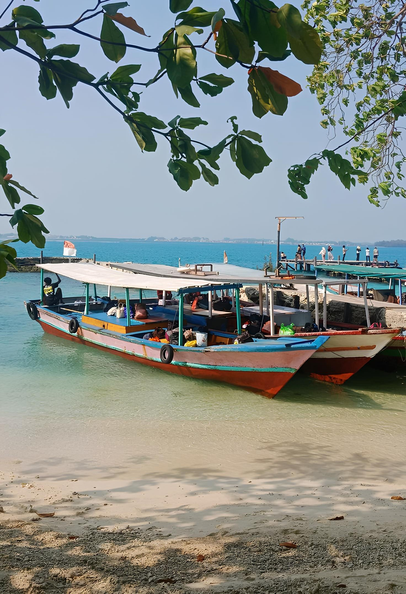
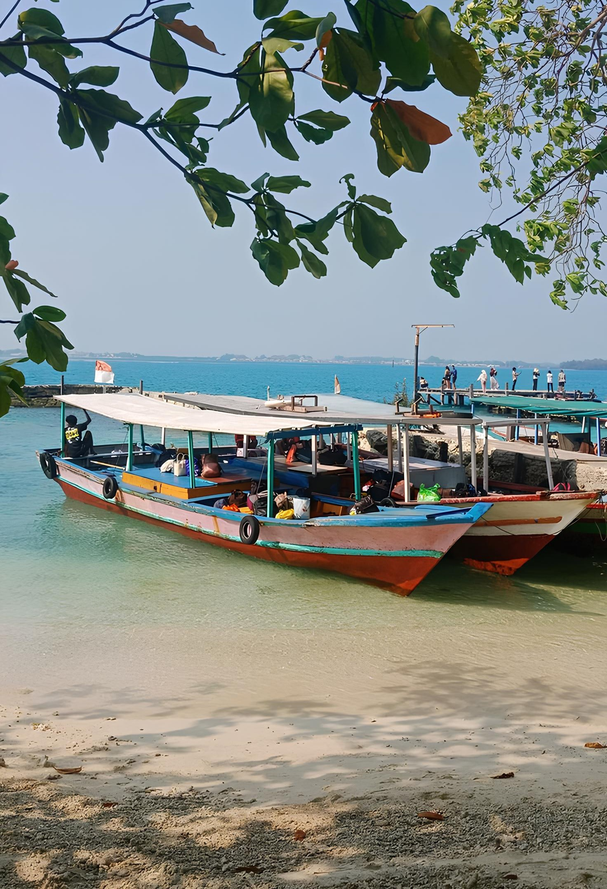

Articles & News

umsu.ac.id • Sunday, 9th of February, 2024
Thousand Islands: The Charm of a Hidden Paradise Near Jakarta
Pulau Seribu, or Seribu Islands, is a stunning natural tourist destination located near the capital of Indonesia, Jakarta. Altha...

locaon.id • Monday, 3th of December, 2024
Tidung Island: The Heart of Thousand Islands
Tidung Island is one of the most popular destinations in the Thousand Islands....

luacu.id • Tuesday, 4th of January, 2024
Pari Island: A Snorkeler’s Paradise
Famous for its clear waters and coral gardens, Pari Island is a haven for snorkeling....

Pram.ac.id • Friday, 11th of February, 2024
Pramuka Island: A Center for Conservation
Pramuka Island is not just a tourist spot but also a hub for environmental...